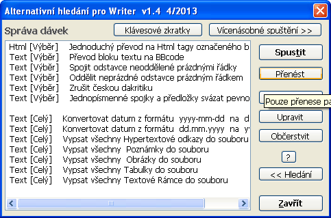
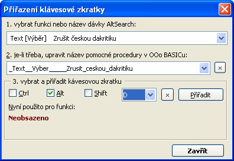

(Alternativní dialog pro hledání a nahrazení ve Writeru)
verze 1.4.2
| Co nabízí toto rozšíøení | Hledání | Nahrazení | Dávkové zpracování | Omezení | Historie zmìn |
Autor: Tomáš
Bílek – © 2007-2013
Licence: LGPL, která je
dostupná napø. zde: http://www.volny.cz/macrojtb/0gnu-lgpl_cs.html
Tento program je rozšiøován v nadìji, �e bude u�iteènı, avšak BEZ JAKÉKOLI ZÁRUKY.
Dialog hledání a nahrazení bez nutnosti maèkat èasto tlaèítko [ Více voleb ] pro zjištìní stavu pøepínaèù, mo�nost rychlého vıbìru pøednastavenıch regulárních a rozšíøenıch vırazù pro hledání a nahrazení
Zjištìní poètu nalezenıch vıskytù hledaného vırazu tlaèítkem [ Spoèítat ]
Hledanı text se mù�e skládat z více ne� jednoho odstavce, pøi nahrazení je mo�no vkládat odstavce
Mo�nost hexadecimálního i dekadického zadání znakù pro hledání i nahrazení
Vyhledání ruèního zalomení sloupce nebo stránky a jejich zrušení
Vyhledání bloku odstavcù ohranièeného textovımi znaèkami
Mo�nost rozšíøení nebo zú�ení vıbìru nalezeného textu o zadanı poèet znakù
Vícenásobné hledání a nahrazení v jednom kroku
Hledání: Poznámek, Textovıch polí, Køí�ovıch odkazù a jejich znaèek (odkazu) podle jejich obsahu, názvu nebo znaèky (odkazu) a jejich vkládání
Hledání objektù Tabulek, Obrázkù a Textovıch rámcù podle jejich názvù; Mo�nost jejich nahrazení textem, textovım obsahem, názvem, obsahem schránky
Hledání a vkládání Poznámek pod èarou a Vysvìtlivek (od verze OOo 2.3). Lze naráz vybrat texty všech poznámek nebo vysvìtlivek a pøiøadit jim hromadnì odstavcovı styl
Hledání podobnì nebo stejnì naformátovanıch èástí textu podle místa kurzoru
Manipulace s èástmi (seskupeními) hledaného textu uzavøenımi v kulatıch závorkách pøi nahrazování
Mo�nost zmìnit v nalezeném nebo nahrazovaném textu Odstavcovı, Znakovı, Seznamovı styl a URL Hypertextového odkazu a nastavovat textové vlastnosti
Mo�nost vkládat pøi nahrazení obsah schránky a vkládat poèitadlo nahrazení a èíslo stránky
Mo�nost pøesmìrovat vısledek nahrazovaného vırazu do jiného textového souboru
Dávkové zpracování: ulo�ení a naètení parametrù hledání a nahrazení; je mo�né ulo�it nìkolik hledání a nahrazení za sebou do jediné sekvence a tu pak celou rychle provést. [v1.4]: Provedení dávky na více otevøenıch textovıch souborech najednou
[v1.2] Vlastní dialog pro rychlé pøiøazení klávesovıch zkratek pro jednotlivé dávky
[v1.3] Zachovat velká písmena - pokud nalezenı text zaèíná velkım písmenem, bude velkım písmenem zaèínat i text nahrazenı
[v1.3] Hledání znakovıch stylù, vıbìr stylu z nabídky pou�itıch stylù
[v1.3.1] Hledání odstavcovıch a seznamovıch stylù v roletì Atributy
[v1.4] Hledání a vkládání zálo�ek (Bookmarks)
Tip na klávesové zkratky pro zrychlení práce pro èastìjší pou�ívání:
1. Otevøít dialog Nástroje - Pøizpùsobit - Klávesnice
2. V poli Kategorie se proklikat na Makra OOo - User - AltSearch - AltSearch
3. V poli Funkce vybrat a pøiøadit tlaèítkem
Zmìnit:
_AltSearch a pøiøadit zkratku Ctrl+H (otevøe dilog pro
hledání);
_FindNext a pøiøadit zkratku Ctrl+L (hledá další vıskyt
za kurzorem i bez otevøeného dialogu);
_FindBack a pøiøadit
zkratku Ctrl+Shift+L (hledá další vıskyt pøed kurzorem i bez
otevøeného dialogu);
[v1.2] Od verze 1.2 se také dají klávesové zkratky pøiøadit dialogem pøímo pøes AltSearch - viz Dávkové zpracování
obsahují èasto pou�ívané nebo slo�ité regulární vırazy nebo parametry pro nahrazení. Po vıbìru polo�ky se do pole (nebo obou polí) pøenesou odpovídající parametry. Ty mohou bıt podle situace vlo�eny nìkolika zpùsoby: na zaèátek, na konec, ke kurzoru nebo pùvodní text zcela nahradí. Zároveò je aktivován pøepínaè "Regulární vırazy".
Roleta Regulární
obsahuje nìkteré vybrané regulární vırazy. Jejich popis je k dispozici v nápovìdì OOo pod heslem Seznam regulárních vırazù.
Omezení: Syntaxe pou�itıch regulárních vırazù není plnì kompatabilní s pùvodní z OOo. Problémy jsou u hledání pøi pou�ití metaznakù * + ? {n,n} tìsnì za seskupením vymezenım závorkami (). Napø. (Mi)?ster nebude nalezeno (avšak pøi pou�ití [ Spoèítat ] bude vrácen reálnı poèet - tato funkce pou�ívá pouze kompatabilní re�im). Dále pokud se hledá seskupení typu (.*)neco nebo (.+)neco tak je vyhledána nejkratší vyhovující varianta oproti standardu, kterı naopak vyhledá nejdelší vyhovující mo�nost. Pokud je tøeba zachovat kompatabilitu, je mo�no celı hledanı vıraz uzavøít do dalšího páru závorek: ((Mi)?ster). Tím se ovšem pozbyde mo�nost odkazovat se na seskupení v nahrazovacím vırazu pomocí reference \# kde # je poøadové èíslo (max. 9) seskupení. Nelze také souèasnì pou�ít referenci na seskupení (vymezené závorkami ()) v hledaném i nahrazovaném vırazu. Viz také seskupení.
Další, nestandardní zástupné parametry:
\l - reprezentuje jakékoli písmeno; toté� jako [:alpha:]{1,1}.
\d - reprezentuje desítkovou èíslici; toté� jako [0-9].
\p - reprezentuje znak ukonèení jakéhokoliv odstavce,
na rozdíl od v OOo standardního $, i prázdného. Lze pou�ít metaznaky +, *, {min,max}.
\p{1,} - najde nejbli�ší konec odstavce následovanı libovolnì dlouhım blokem prázdnıch odstavcù. Toté� co \p*.
\p{2,4} - najde nejbli�ší konec odstavce následovanı minimálnì jedním, maximálnì 3 prázdnımi odstavci, celkem tedy minimálnì 2 maximálnì 4 odstavce za sebou.
Omezení: Pomalé pøi samostatném pou�ití. Nìkdy problémy pøi zpìtném hledání.
\xhhhh - umo�ní zadat kód znaku hexadecimálním èíslem (místo hhhh)
\#ddddd - umo�ní zadat kód znaku dekadickım èíslem (místo ddddd).
Pokud následující znak není èíslice, není nutno dodr�et dodr�et všech 5 míst ddddd. Jinak je tøeba doplnit nulami zleva.
\c - vyhledá ruèní zalomeni slupce. Omezení: Pomalé pøi samostatném pou�ití.
\m - vyhledá ruèní zalomeni stránky.
Omezení: Pomalé pøi samostatném pou�ití. Pokud se pou�ívají skupiny () tak parametr \m musí bıt na zaèátku hledaného øetìzce, nebo nesmí bıt sám: \m(...) ale ne (...)\m.
\s - reprezentuje jakoukoli mezeru; toté� jako [ \xA0\x9\xA].
\S - reprezentuje znak pevné, nedìlitelné mezery (\x00A0 \#160)
Roleta Rozšíøené
[::BigBlock::] - najde libovolnì dlouhı blok odstavcù ohranièenı zadanım textem
zaèátek[::BigBlock::]konec - hledá se text "zaèátek" a po jeho nalezení je hledán text "konec", pokud je obojí nalezeno je celı blok oznaèen.
V nahrazovacím øetìzci je mo�no pro samostatné vlo�ení èásti "zaèátek", blok odstavcù, "konec" pou�ít parametry \b, &, \e.
Omezení: V poèáteèní a koneèné znaèce nelze pou�ít symboly || pro vícenásobné hledání-nahrazení, viz ní�e.
[::Grow n1,n2::] - nalezenı text bude rozšíøen o n1 znakù doleva a n2 znakù doprava
[::Grow -1,-1::]text - pokud v textu existuje slovo text tak bude nalezeno, ale oznaèeno bude pouze ex.
Omezení: parametr je tøeba uvádìt v�dy na zaèátku hledaného øetìzce a za ním hledanı vıraz. Pokud se nastaví posuny na zápornou hodnotu, pak mù�e v závislosti na délce hledaného vırazu dojít pøi dalším hledání k cyklickému nalezení stejného místa.
text1||text2||text3||… - vícenásobné hledání-nahrazení v jednom kroku
Tato volba pøidá v�dy na konec hledaného i nahrazovacího øetìzce symboly || ohranièující jednotlivá dílèí hledání, nahrazení.
Hledej:
text1||text2||text3
Nahraï:
neco1||neco2||neco3 Provede se hledání text1
nahradí se neco1, pokraèuje hledáním text2
nahradí se neco2 atd.
Omezení: nelze zde zároveò pou�ít parametr [::BigBlock::], nelze pou�ívat seskupení.
Hledání objektù
[::Note::] - hledání textovıch poznámek (�luté bubliny) podle jejich obsahu
[::Note::] vyhledá se jakákoli textová poznámka
[::Note::]pozn. vyhledá se textová poznámka obsahující podøetìzec pozn.
Omezení: Vyhledává se pouze podøetìzec v obsahu - nelze pou�ít plné regulární symboly.
[::Field::] - hledání textovıch polí podle jejich obsahu
[::Field::] vyhledá se jakékoli (neplatí na 100%) textové pole
[::Field::]obsah vyhledá se textové pole zobrazující v dokumentu text obsah
Omezení: Platí obdobná jako pro [::Note::]. Viz vıše.
[::TextFrame::] - hledání textovıch rámcù podle jejich názvu
[::TextFrame::] vyhledá se jakıkoli textovı rámec
[::TextFrame::]rám1 vyhledá se textovı rámec obsahující v názvu podøetìzec rám1
Omezení: 1. pøi pou�ití [ Najít ] se vyhledá následující rámec jen pokud je vybrán rámec nebo kurzor stojí v rámci. Pokud je jinde v textu, je nalezen v�dy první rámec ze seznamu. Nefunguje pøi tom omezení na "Pouze souèasnı vıbìr".
2. Praktická pou�itelnost [ Nahradit ] je v dùsledku bodu 1. silnì omezená.
3. Poøadí hledání odpovídá (naneštìstí, prozatím) posloupnosti vlo�ení rámcù do dokumentu a NE poøadí od zaèátku dokumentu do konce podle stránek.
4. Vyhledává se podøetìzec v názvu - nelze pou�ít plné regulární symboly.
[ Najít vše ] a [ Nahradit vše ] by mìlo bıt funkèní vèetnì, ohranièení na souèasnı vıbìr.
[::Picture::] - hledání obrázkù podle jejich názvu
[::Picture::] vyhledá se jakıkoli obrázek
[::Picture::]obr1 vyhledá se obrázek obsahující v názvu podøetìzec obr1
[::Picture::]\\text vyhledá se podøetìzec text v Alternativním textu obrázku [v1.4]
[::Picture::]\\ vyhledají se všechny obrázky s prázdnım Alternativním textem [v1.4]
Omezení: Platí obdobná jako pro [::TextFrame::]. Viz vıše.
[::TextTable::] - hledání tabulek podle jejich názvu
[::TextTable::] vyhledá se jakákoli tabulka
[::TextTable::]tab1 vyhledá se tabulka obsahující v názvu podøetìzec tab1
Omezení: Platí obdobná jako pro [::TextFrame::]. Viz vıše.
[::Footnote::] - hledání poznámek pod èarou (dále jen PP)
[::Footnote::] vyhledá se kotva v textu pro jakoukoli PP
[::Footnote::]5 vyhledá se kotva PP která obsahuje podøetìzec 5
[::Footnote::]\\text vyhledá se kotva PP její� text obsahuje podøetìzec text, pokud se pou�ije tlaèítko [ Najít vše ] tak se vyberou celé texty PP které obsahují podøetìzec text.
[::Footnote::]\\ s tlaèítkem [ Najít vše ] vybere celé texty všech PP (vhodné napø. pro hromadné pøiøazení stylù všem PP)
Omezení: Funkce pracuje správnì a� od verze OOo 2.3
[::Endnote::] - hledání vysvìtlivek
Pou�ití parametrù i omezení je obdobné jako u Poznámek pod èarou, viz vıše
[::ReferenceMark::] - hledání textu oznaèeného jako znaèka (odkaz) pro Køí�ovı odkaz
[::ReferenceMark::] vyhledá jakıkoli text nastavenı jako znaèka
[::ReferenceMark::]text vyhledá text nastavenı jako znaèka, kterı obsahuje podøetìzec text
[::ReferenceMark::]\\ref1 vyhledá text nastavenı jako znaèka, její� Název obsahuje podøetìzec ref1
[::ReferenceMark::]\\\\ vyhledá text nastavenı jako znaèka, kterı má nulovou délku
[::Reference::] - hledá textové pole (køí�ovı odkaz) odkazující na znaèku
[::Reference::] vyhledá textové pole typu køí�ovı odkaz
[::Reference::]pod vyhledá køí�ového odkaz, kterı obsahuje podøetìzec pod
[::Reference::]\\ref1 vyhledá køí�ovı odkaz, jeho� Název obsahuje podøetìzec ref1
[::Reference::]\\\\ vyhledá køí�ovı odkaz, jehoø text má nulovou délku
Pokud se tento parametr vybere pomocí rolety Rozšíøené a kurzor stojí na textu, kterı je nastaven jako znaèka (odkaz) pro køí�ovı odkaz, je do pole hledání pøenesen i odpovídající Název pro Køí�ovı odkaz a je mo�né ho ihned vyhledat.
[::Bookmark::] - hledá v zálo�kách (Bookmarks) [v1.4]
[::Bookmark::] vyhledá místo v textu nebo blok textu oznaèenı jako zálo�ka
[::Bookmark::]text vyhledá slovo text, pokud je uvnitø textového bloku oznaèeného jako zálo�ka
[::Bookmark::]\\RefHeading vyhledá zálo�ku v jejím� názvu je obsa�en podøetìzec RefHeading (hledá v názvu)
Roleta Atributy
umo�òuje hledání podle zadanıch vlastností (atributù), pøípadnì i hodnot. Zápis musí zaèínat øetìzcem [:::, následuje jméno vlastnosti (více jmen se oddìluje pomocí znaku | ) a konèí øetìzcem ::]. Po nìm mù�e ještì následovat upøesnìní hledaného textu pomocí zástupnıch znakù. Pokud se má hledat i konkrétní hodnota vlastnosti pou�ije se konstrukce jméno=hodnota.
[:::ParaStyleName::] - hledání odstavcového stylu [v1.3.1]
[:::ParaStyleName=::] vyhledá všechny celé odstavce s nastavenım odstavcovım stylem jinım ne� Vıchozí
[:::ParaStyleName=Pøíklad::] vyhledá celı odstavec s odstavcovım stylem Pøíklad
[:::ParaStyleName=Pøíklad::] nìco vyhledá text nìco kterı je v odstavci formátovaném odstavcovım stylem Pøíklad
Omezení:
Nenajde nìkteré èásti textu s nulovou délkou, napø. prázdnı
odstavec.
Nelze kombinovat s ostatními atributy.
[:::CharStyleName::] - hledání znakového stylu [v1.3]
[:::CharStyleName=::] vyhledá èást textu s nastavenım znakovım stylem jinım ne� Vıchozí
[:::CharStyleName=Pøíklad::] vyhledá èásti textu na které je pou�it znakovı styl Pøíklad
[:::CharStyleName=Pøíklad::]nìco vyhledá text nìco pokud je formátován znakovım stylem Pøíklad
Omezení:
Funguje jen dopøedu - pøepínaè Pozpátku není funkèní (hlásí
nenalezeno).
Nenajde nìkteré èásti textu s nulovou délkou, napø.
prázdnı odstavec. [v1.3.1]
Nelze kombinovat s ostatními atributy.
[v1.3.1]
[:::NumberingStyleName::] - hledání stylu seznamu - pou�ití podobné jako hledání odstavcového stylu, viz vıše. [v1.3.1]
[:::HyperLinkURL::] - hledá èástí textu s nastavenım atributem HyperLinkURL
[:::HyperLinkURL::] vyhledá jakıkoli hypertextovı odkaz
[:::HyperLinkURL::]odkaz
vyhledá èást hypertextového odkazu
obsahujícího text odkaz.
[:::HyperLinkURL=file:///c:/pokus.odt::] vyhledá hypertextovı odkaz v jeho� URL je nalezen podøetìzec file:///c:/pokus.odt.
[:::HyperLinkURL=file:///c:/pokus.odt::]odkaz vyhledá èást hypertextového odkazu v jeho� URL je nalezen podøetìzec file:///c:/pokus.odt a obsahujícího text odkaz.
Seznam dostupnıch textovıch atributù s jejich souèasnımi hodnotami podle souèasného vıbìru lze naèíst pomocí tlaèítka [ Naèíst vlastnosti ] a zobrazit v roletové nabídce vedle. Jejich struènı vıznam lze vìtšinou najít zde.
Podobné znakové atributy - tato funkce naète nìkteré ruènì zmìnìné znakové atributy (podle souèasného vıbìru) pro vyhledání podobnì formátovanıch míst. Pokud je napø. kurzor na ruènì zmìnìném názvu písma, budou hledána všechna místa se zmìnìnım jménem písma - bude se hledat [:::CharFontName::].
Stejné znakové atributy - tato funkce naète nìkteré ruènì zmìnìné znakové atributy (podle souèasného vıbìru) pro vyhledání stejnì formátovanıch míst. Pokud je napø. kurzor na ruènì zmìnìném názvu písma, budou hledána všechna místa se zmìnìnım a zároveò stejnım jménem písma - bude se hledat [:::CharFontName=Arial::].
Omezení: Ne všechny existující vlastnosti odstavce a písma OOo podporuje pro hledání, ne všechny kombinace fungují podle oèekávání a správnì.
Listbox Nahradit
& \0 - oba tyto zástupné znaky znamenají toté� - pøi nahrazení pøedstavují celı nalezenı text
Pokud se hledalo pomocí [::BigBlock::] tak pøedstavují jen blok odstavcù mezi znaèkami zaèátku a konce.
Pokud byl hledán objekt pomocí [::Note::], [::Field::], [::TextFrame::], [::Picture::], [::TextTable::] tak pøedstavují pøímo tyto objekty (vkládají se pøes schránku).
\b \e - pokud se hledalo pomocí [::BigBlock::] tak pøedstavují obsah zaèáteèní a ukonèující znaèky. Omezení: nelze pou�ívat seskupení ().
\1 \2 \3 \4 \5 \6 \7 \8 \9 - obsah seskupení
Pokud byly v hledaném vırazu pou�ity závorky (), pak \1 pøedstavuje v poøadí první nalezenı text, pøíslušnı obsahu prvních (), podobnì \2 pøísluší druhému páru () atd, maximálnì \9 pøísluší 9. páru. Za platnou je pova�ována pouze 1. úroveò zanoøení závorek, další úrovnì jsou ignorovány.
Pøíklad:
Pomocí vırazu (\d{1,2})\. *(\d{1,2})\. *\d{2,2}(\d{2,2}) lze napø. najít datum ve formátu 01. 12. 2007 a nahradit za 07-12-01 pomocí vırazu pro nahrazení \3-\2-\1.
Pokud je tøeba zpracování seskupení vypnout (napø. z dùvodu plné kompatibility regulárních vırazù ve standardu OOo) je tøeba celı hledanı vıraz vlo�it do dalšího páru ().
Omezení: pou�ití sekupení je pomìrnì pomalé, není plnì kompatabilní s pùvodními v OOo.
Nekompatabilita pøi hledáni kde je metznak ihned za seskupením (opak)* je dána principem postupného vyhledávání navazujících blokù textù a nijak jednoduše ji se mi ji nedaøí odstranit, viz také zde. V tìchto pøípadech poskytují funkce [ Spoèítat ] a [ Najít vše ] správné reálné poèty zatímco ostatní bez zapnutí kompatability nenajdou nic. Ve slo�itìjších pøípadch je tøeba chování vyzkoušet a zkusmo ovìøit.
\p - vlo�í do nahrazovaného vırazu novı odstavec
\t - vlo�í do nahrazovaného vırazu tabulátor (\x0009 \#9)
\s - vlo�í do nahrazovaného vırazu nedìlitelnou mezeru (\x00A0 \#160)
\n - vlo�í do nahrazovaného vırazu ruèní zalomení øádku (\x000A \#10)
\c - nastaví v nalezeném odstavci ruèní zalomeni slupce pøed
\m - nastaví v nalezeném odstavci ruèní zalomeni stránky pøed
\M - nastaví v nalezeném odstavci ruèní zalomeni stránky za
\r - zruší ruèní zalomení stránky, sloupce v nalezeném odstavci
\xhhhh - vlo�í znak zadanı hexadecimálním èíslem (místo hhhh)
\#ddddd - vlo�í znak zadanı dekadickım èíslem (místo ddddd).
\h{adresaURL} - nastaví nalezenému textu URL hypertextového odkazu na adresaURL
\h{}, \h nastaví nalezenému textu URLhypertextového odkazu na prázdnı øetìzec èím� odkaz sma�e z dokumentu (text popisu samozøejmì v dokumentu zùstává).
\H{substr} - nahrazení podøetìzce v URL adrese odkazu
Nutno pou�ít souèasnì s hledáním [:::HyperLinkURL=::].
Pokud bylo hledáno napø. pomocí vırazu [:::HyperLinkURL=substr::] pak se vyhledájí pouze odazy jejich� URL obsahuje podøetìzec substr. Pou�ití \H{repl} v nahrazení pak vyhledá v URL adrese text substr a nahradí jej textem repl.
\u - vlo�í v nahrazovaném vırazu URL adresu nalezeného textu (pokud jde o hypertextovı odkaz)
\P{Text} - nastaví v odstavci kde je nalezenı text zadanı odstavcovı styl (Text)
Styl se aplikuje na odstavec ve kterém je text nahrazovacího vırazu. Pro nastavení "Vıchozího" stylu lze pou�ít \P nebo \P{}. Pokud je parametr pou�it vícekrát s vlo�enımi odstavci, tak se styl mìní s ka�dım novım parametrem, a platí a� do konce odstavce. Napø. pokud je vıraz pro nahrazení blok1\P{Popisek}\p blok2\P{Nadpis 1} tak se vlo�í text blok1 a celému odstavci se pøiøadí styl Popisek a za nìj se vlo�í novı odstavec s textem blok2 a stylem Nadpis 1.
\C{Citace} - nastaví v nahrazovaném vırazu zadanı znakovı styl (Citace)
Styl se aplikuje na celı text nahrazovacího vırazu. Pro nastavení "Vıchozího" stylu lze pou�ít \C nebo \C{}.
Pokud je parametr pou�it vícekrát s rùznım stylem, pak se znakovı styl mìní s ka�dım novım parametrem; poslední se vìtšinou aplikuje a� do konce vırazu, proto�e následnì vlo�ené èásti textu pøebírají atributy podle pøedchozích. Tomu se dá zabránit nastavením "Vıchozího" stylu tìsnì za zadanım, napø. \C{Citace}\C.
Napø. pokud je vıraz pro nahrazení blok1\C{Citace}blok2\C{Iniciály} tak se vlo�í text blok1 se znakovım stylem Citace a za nìj text blok2 se znakovım stylem Iniciály.
\N{Seznam 3} - nastaví v odstavci kde je nalezenı text zadanı styl èíslování (Seznam 3)
Platí obdobná pravidla pou�ití jako pro parametr \P{}. Zrušení stylu èíslování odstavce se dosáhne pou�itím \N nebo \N{}.
\D - nastaví v nalezeném textu vıchozí formátování podle pøiøazeného odstavcového stylu
Zruší ruènì provedené zmìny formátování textu, podobnì jako kdy� se pou�ije Ctrl+Shift+Space.
Platí obdobná pravidla pou�ití jako pro parametr \C{}.
\d - resetuje na vıchozí textové atributy pouze v místì pou�ití.
Narozdíl od \D nemá vliv na pøedchozí vlo�enı text, ale jen na následující.
\F{Nová PP} - vlo�í do místa náhrady novou poznámku pod èarou obsahující text Nová PP
Uvniø závorek lze pøitom pou�ít parametry pro èásti nalezeného textu, napø. & nebo \1
\E{Nová vysvìtlivka} - vlo�í do místa náhrady novou vysvìtlivku, podobne jako \F
\B{znaèka|text} - vlo�í text text reprezentující znaèku o názvu znaèka pro køí�ovı okaz
Uvniø závorek lze pøitom pou�ít parametry pro èásti nalezeného textu, napø. & nebo \1
\L{0,0,znaèka} - vlo�í køí�ovı odkaz (pole) o zadanıch parametrech s názvem znaèky znaèka
Vıznam èíselnıch parametrù (oddìlenıch èárkou)
první èíslo - typ odkazu: 0 - arabské èíslo stránky, 1 - èíslo kapitoly, 2 - odkaz (text znaèky), 3 - pod/nad, 4 - èíslo stránky podle stylu stránky, 5 - kategorie a èíslo popisku, 6 - text popisku, 7 - èíslování (popisku)
druhé èíslo - typ zdrojové znaèky, tj odkaz na: 0 - znaèku køí�ového odkazu, 1 - interval èíslování, 2 - zálo�ku, 3 - poznámku pod èarou, 4 - vysvìtlivku
\K{w,jmeno_zalozky} - vlo�í zálo�ku s názvem jmeno_zalozky. [v1.4]
První parametr urèuje zpùsob vlo�ení zálo�ky pokud je vkládán (nalezen) blok textu:
w - bude vlo�ena zálo�ka na celı blok textu
b - bude vlo�ena zálo�ka k zaèátku bloku
e - bude vlo�ena zálo�ka ke konci bloku
\K{},
\K pokud je v daném místì textu definována zálo�ka tak bude
vymazána. Pokud je nalezen blok textu oznaèenı jako zálo�ka bude
zálo�ka smazána, textovı blok zùstane nezmìnìn.
\K{w,nove_jmeno}\K
- pøejmenování zálo�ky - musí bıt ale vyhledána pomocí [::Bookmark::]
\o - vlo�í do nahrazovaného vırazu textovı obsah nalezeného objektu
Pokud byl hledán objekt pomocí [::Note::], [::Footnote::], [::Endnote::], [::TextFrame::], [::Picture::], [::TextTable::] tak se vlo�í text kterı tyto objekty obsahují. Tabulka je pøevedena pomocí tabulátorù mezi sloupci a odstavcù mezi øádky.
Omezení: Maximální velikost pøevádìné tabulky je omezena na 65 kB vısledného textu celkem.
Pokud se hledalo pomocí [::Field::], [::Reference::], [::ReferenceMark::] tak se vlo�í zobrazenı text kotvy nebo pole.
\O - vlo�í do nahrazovaného vırazu název nalezeného objektu (pokud byly hledány objekty)
Pokud byl hledán objekt pomocí:
[::TextFrame::], [::Picture::], [::TextTable::] - vlo�í se názvy tìchto objektù.
[::Note::], [::Field::] - vlo�í se oznaèení typu textového pole
[::Reference::], [::ReferenceMark::] - vlo�í se název znaèky pro odkaz
[::Footnote::], [::Endnote::] - vlo�í se text kotvy (index poznámky)
\i - vlo�í do nahrazovaného vırazu poèitadlo nahrazení - jen pokud se pou�ije [ Nahradit vše ]
\i{start,digit} - formát poèítadla: \i{9,4} - èísluje od 9, na 4 místa (0009, 0010, 0011,...) [v1.4]
\I - vlo�í do nahrazovaného vırazu èíslo stránky na které je vyhledanı text.
Pokud je pou�ito pøesmìrování náhrad (\R) tak bude vlo�eno èíslo stránky na které byl zaèátek nalezeného textu.
Omezení: Nefunguje (vrací 1) v poznámkách pod èarou, záhlaví a zápatí.
\v - vlo�í do nahrazovaného vırazu obsah schránky
\V - vlo�í do nahrazovaného vırazu obsah schránky jako neformátovanı text
\f - zachovat formátování
Pokud se v nahrazovaném vırazu vkládá i nalezenı text (& nebo \0) tak bude vkládán pøes schránku. Pokud tedy obsahuje textová pole, poznámky, odkazy apod. mìly by se vlo�it v pùvodním stavu.
\R - pøesmìrování nahrazení do jiného souboru
Volba zpùsobí vıpis nahrazovaného vırazu do nového souboru .ODT namísto pøepsání nalezeného místa. Pùvodní soubor by mìl tedy zùstat beze zmìny. Jméno rámu lze zadat pomoci \R{jmeno}. Pokud je tøeba zapisovat do døíve ulo�eného otevøeného souboru, je nutno zadat pøesnì stejné jméno jako je v titulku okna vèetnì " - OpenOffice.org Writer". Záznamy se pøidávají v�dy na konec souboru.
Pøíklad:
Pokud bylo
hledáno napø. pomocí vırazu [:::HyperLinkURL::] a
nahrazovací vıraz byl Odkaz \i, strana \I: &
(URL: \u)\p\R pak po pou�ití [ Nahradit vše ]
budou v novém souboru vypsány všechny hypertextové odkazy nalezené v
pùvodním souboru ve tvaru: Odkaz 1, strana 1: textOdkazu (URL:
URLadresa) v samostatném
odstavci.
Tlaèítko a roleta Naèíst vlastnosti
Pomocí tlaèítka [ Naèíst vlastnosti ] je mo�né aktualizovat seznam (nìkterıch) vlastností a jejich hodnot právì vybraného objektu. Prohlí�et a vybrat lze z rolety vedle.
\A{vlastnost=hodnota} - nastaví v nahrazovaném vırazu hodnotu zadané vlastnosti
Platí obdobná pravidla pou�ití jako pro parametr \C{}. Více vlastností naráz (pro stejnou èást textu) lze nastavit jejich uvedením za sebou - \A{v1=h1}\A{v2=h2}...
Umo�òuje ukládat a naèítat nastavené hledání a nahrazení. Je mo�né ulo�it nìkolik hledání a nahrazení za sebou do jediné sekvence a tu pak celou rychle naèíst a provést.
Momentální nastavení všech parametrù je mo�né ulo�it pomocí [ Ulo�it dávku ]. V dialogu pro pojmenování, kterı se uká�e, je nabídnuto jméno poslední pou�ité dávky. Pokud zadáte existující jméno, mù�ete rozhodnout, zda se starı obsah pøepíše, nebo bude zachován a nové se pøidá na konec. Pøitom se automaticky ulo�í pøíkaz "NahraditVše" se kterım bude dávka následnì spuštìna. To se dá pozdìji zmìnit pøi úpravì souboru s dávkami.
Tlaèítko [ Dávky >> ] pøepne na dialog Správa dávek kde lze dávky spouštìt a upravovat. Návrat zpátky do dialogu hledání pøes tlaèítko [ << Hledání ].
Všechny dávky se ukládají do textového souboru AltSearchScript.txt v u�ivatelském adresáøi …/OpenOffice.org2/user/config/, kterı lze pomocí tlaèítka [ Upravit ] z dialogu Správa dávek otevøít a upravovat. Pro úpravy je pøednastavenı textovı editor notepad, je však mo�no zadat jakıkoli jinı, úpravou souboru AltSearchEditor.ini ve stejném adresáøi. Po zmìnách a ulo�ení souboru s dávkami je mo�né aktualizovat seznam jmen dávek pomocí [ Obèerstvit ]. Syntaxe souboru AltSearchScript.txt je popsána na jeho zaèátku. Kódování tohoto souboru je od verze 1.1.1 v UTF-8 (døíve windows-1250 nebo ISO 8859-2 na linuxu); pokud je tøeba zachovat definice dávek ulo�enıch v pøedešlé verzi které obsahují diakritiku, je tøeba soubor najít, otevøít ve vhodném editoru (pspad, kwrite) a ruènì pøevést na UTF-8. Jinak hrozí pøi prvním ulo�ení nebo pøidání další dávky nevratná ztráta diakritickıch znakù!
Po dvojkliku na polo�ku seznamu, nebo tlaèítkem [ Spustit ] se vybraná sekvence naète a provedou se ulo�ené hledání a náhrady. Pøi pou�ití dávek na vybranou oblast doporuèuji nechat na zaèátku i konci vıbìru 1-2 prázdné odstavce.
Tlaèítko [ Pøenést ] slou�í k pøenesení parametrù hledání, nahrazení a nastavení pøepínaèù do dialogu hledání bez toho, aby se náhrady skuteènì provedly. Pokud dávka obsahuje sekvencí více navazujících hledání a náhrad, pøenese se jen poslední.
[v1.2]
Tlaèítko [ Klávesové zkratky ]
otevøe dialog, kterı umo�ní pøiøadit klávesové zkratky existujícím
dávkám. Popis funkce:
1. vybrat v prvním listboxu jméno dávky
2. nastavit po�adovanou klávesovou zkratku
3.
zmáèknout tlaèítko [ Pøiøadit ]
Aby to fungovalo, je v okam�iku pøiøazení vytvoøena pomocná
procedura v Basic modulu Standard.AltSearchBatchs
se jménem upravenım podle syntaxe Basicu. Toto jméno je zobrazeno ve
druhém poli dialogu. Spuštìním této pomocné procedury se vyvolá
dialog AltSearch a ihned se automaticky provede zadaná dávka. Správná
funkce je vázána na shodu jména dávky uvedenou uvnitø pomocné
procedury a jména existující dávky. Pokud tedy zmìníte jméno dávky ke
které u� byla døíve pøiøazena klávesová zkratka, je tøeba klávesovou
zkratku znovu pøiøadit (starou pomocnou proceduru s pùvodním jménem
je mo�no smazat pomocí jejího vybrání ve druhém listboxu a vedlejším
tlaèítkem [ x ]).
Jakoukoli klávesovou zkratku, která je v OOo writeru pou�ita, je
mo�no uvolnit pomocí dolního tlaèítka [ x ],
proto pozor a� si nechtìnì nesma�ete nìjakou dùle�itou zkratku.
[v1.4]
Dávku vybranou ve Správì dávek lze spustit
a aplikovat i na více právì otevøenıch textovıch souborù naráz:
1.
Vybrat kliknutím v seznamu dávku kterou chceme pou�ít.
2. Kliknout
na tlaèítko [Vícenásobné spuštìní>>]
3. Vybrat pomocí Ctrl + klik myší soubory ze seznamu na kterıch
chceme vykonat dávku vybranou v bodì v bodì 1.
V seznamu jsou
pouze právì otevøené soubory typu "writer".
4.
Stisknutím tlaèítka [Start] se spustí
provedení dávky na všech vybranıch souborech. V prùbìhu zpracování
mù�e problikávat zobrazení - doporuèiji po tuto dobu do nièeho v Ooo
nezasahovat.
Volba "Potlaèit hlášení" potlaèí hlášení o provedenıch zmìnách po zpracování ka�dého z vybranıch souborù ale vypíše jen závìreèné souhrnné hlášení po zpracování posledního z vybranıch souborù.
pokud jsou známa, jsou uvádìna vìtšinou u popisu jednotlivıch parametrù. Obecnì platí:
Pou�ití regulárních vırazù není plnì kompatabilní s pùvodním z OOo, zvláštì pøi pou�ití seskupení.
Pokud je nastavena volba "Pouze souèasnı vıbìr" tak se nevyhledají a nenahradí texty, které jsou v podøízenıch rámcích nebo tabulkách, i kdy� jsou jsou uvnitø oznaèeného bloku. Hledání uvnitø bloku je omezeno pouze na stejnou textovou oblast jako je oznaèenı blok. Vícenásobnı blok není podporován.
Funkce "Najít vše" nedoká�e oznaèit znaèku odstavce \p, proto�e pro vıbìr textu je pou�ívána vlastnost "Zvıraznìní" (barva podkladu znaku) a toto nelze pou�ít pro samostatnou znaèku odstavce. Z toho také plyne omezení této funkce pouze na texty, kde tato vlasnost - zvıraznìní - není pou�ita. Pokud je v dokumentu zvıraznìní pou�ito a pou�ije se tato funkce, objeví se varovnı dialog.
Pøi nahrazování slo�itìjšími vırazy je funkce "Zpìt" (Undo) fragmentována na jednotlivé kroky nahrazení, tak�e se snadno stane �e pak poèet krokù zpìt nestaèí pro navrácení do pùvodního stavu.
Verze 1.4.2 3/2017 [v1.4.2]
Oprava chybìjící závorky v load_fr - msg(29) - chyba po spuštìní na LO 5.3.1.2
Verze 1.4.1 11/2015 [v1.4.1]
Aktualizace holandské (nl) lokalizace
Snaha opravit (ne)zobrazování šipek roletovıch nabídek (Regulární , Rozšíøené...) v nìkterıch Linuxovıch verzích LO.
Verze 1.4 12/2013 [v1.4]
Nové funkce a zmìny:
Pøidána podpora nového hledání ICU regullar exppression zadaného hex kódem (indkace rozpoznání nového ICU v pravém horním rohu dialogu + bublina verze Ooo): v novìjších verzích OOo je akceptován starı tvar \xhhhh i novı \uhhhh. ICU zavedeno v Ooo od v 3.4, v Libreoffice asi od v 4.0. V obou pøípadech s rùznımi chybami (iss. 21633, 93890).
Pøidáno tlaèítko "Vícenásobné spuštìní" - umo�ní vykonat dávku na více otevøenıch textovıch dokumentech najednou.
Hledání zálo�ek (Bookmarks), hledání podøetìzcù v jejich textech (pokud odkazují na blok textu), hledání v jejjich jménech
Vkládání zálo�ek (bookmark) pøes parametr \K{w|b|e,bookmarkName}. Je mo�né je hromadnì mazat a pøejmenovat
Pøidán formát poèítadla náhrad: mo�nost zadání poèáteèní hodnoty a poètu vlo�enıch èíslic, napø. \i{9,4} = èísluje od 9, na 4 místa (0009, 0010, 0011,...)
Hledání obrázkù:
- zobrazení
Alternativního textu (Title) pod názvem (za znakem )>, v dialogu
po nalezení;
- hledání podle Alternativního textu (Title) pomocí
\\
Experimentální mo�nost pøímo pøepnout jazyk lokalizace pomocí pravé myši na tlaèítku [?]
Oprava chyb:
oprava vyhledávání \\ (v re�imu reg. symb. i bez nìj)
upraven addon.xcu aby se zobrazovaly toolbary i v novìjších verzích Oo Lo
hledat podøetìzec v Hyperlink URL - nenašlo nic; (ale v OOo v2.3 ještì fungovalo)
drobné opravy textù v hlášeních
nová verze 1.3.1 helpu nl
Verze 1.3.2 6/10 [v1.3.2]
Oprava chyb:
Chyba pøi instalaci na nìkterıch OS (addon.xcu: <oor:component-data ...> ... </oor:component-data>)
Verze 1.3.1 4/10 [v1.3.1]
Nové funkce:
Hledání seznamovıch a odstavcovıch stylù pøes roletu Atributy
Pøidána defaultní dávka pro pøevod (pøidání tagù) textu na BBcode. (Objeví se pouze pøi první "èisté" instalaci AltSearch v "AltSearchScript.txt". Pøi opakované instalaci je tøeba soubor "AltSearchScript.txt" najít, pøejmenovat a pak pøi prvním spuštìní AltSearch se naètou defaultní dávky.)
Oprava chyb:
drobné zmìny v Italské lokalizaci
aktualizovanı Holandskı Help
seznam vlastností (atributù) textu, vpravo od tlaèítka "Naèíst vlastnosti" je nyní setøídìnı podle abecedy
Verze 1.3 11/09 [v1.3]
Nové funkce:
mo�nost volby "Zachovat velá písmena"
hledání znakovıch stylù (roleta Atributy - Znakovı styl)
vıbìr hledanıch, nahrazovanıch stylù pøes nabídku (viz roleta Atributy - Znakovı styl, Nahradit - Nastavit styl znakù, atd.)
hlavní dialog se sna�í nezakrıvat nalezenı text
Italskı Help
Oprava chyb:
tabulky uvnitø bloku - hledalo se jen pøed první tabulkou, dál u� se u� nic nenašlo
drobné zmìny v Holandské lokalizaci
pøi nastavené slovenštinì se pou�ije èeština
Verze 1.2.2 5/09 [v1.2]
Nové funkce:
lokalizace do Italštiny (bez Helpu)
Francouzkı Help (paralelní s Anglickım)
pøidána polo�ka do hlavního menu OOo: Úpravy - Alt. Najít a nahradit... (pod standardní)
AltSearch zpøístupnìn mimo Writer i pro dokumenty typu HTML a Hlavní. Pozor, pokud se nahrazuje nìco v Hlavním dokumentu, tak se zmìny ulo�í pouze do nìj, ale u� NE do podøízenıch (pøilinkovanıch dokumentù)!
Oprava chyb:
Anglickı help opravenı Annou Sharman
drobné zmìny Anglického textu dialogu klávesovıch zkratek
pøíkaz Growe zmìnìn na Grow (i Growe ale funguje dál)
klávesové zkratky teï fungují i pro HTML a Hlavní document
Verze 1.2.1 7/08 [v1.2]
Nové funkce:
lokalizace do Holandštiny
Úpravy:
od nyní nezávislé na BASICové knihovnì "TOOLS"
Verze 1.2 7/08 [v1.2]
Nové funkce:
vlastní dialog pro vytvoøení klávesovıch zkratek pro dávky
èásteèná lokalizace do Francouštiny (bez helpu)
novı parametr pro dávky: noSummary (BezSouhrnu) - nezobrazí se hlášení o skonèení dávky
Oprava chyb:
obejití bugu OOo 2.4 na linuxu (špatné vyhodnocení funkce CASE v Basicu), co� zpùsobí chyby typu: "Bt_run: Unknown command: [Find]..." pøi spuštìní dávky
Verze 1.1.2 4/08
Nové funkce:
lokalizace do Nìmèiny
lokalizace do Španìlštiny
Verze 1.1.1 3/08
Nové funkce:
lokalizace do Ruštiny
Oprava chyb:
pøi probíhajícím hledání nebo nahrazování havárie pøi pokusu o pøepnutí nebo otevøení jiného textového souboru
Soubor s definicemi dávek .../config/AltSearchScript.txt je od nyní v kódování UTF-8, pro správnou funkci azbuky apod.
Verze 1.1 2/08
Nové funkce:
hledání: parametr \l pro hledání jakéhokoliv písmene
hledání: podpora vyhledání v textu i názvu Znaèek pro reference a Køí�ovıch referencí
hledání: poznámky pod èarou a vysvìtlivky (Footnotes a Endnotes); lze vybrat naráz i všechny texty poznámek. Fungují správnì a� od verze OOo 2.3 !
nahrazení: parametr \d pro reset textovıch atributù v místì vıskytu, tak�e dál se vkládá default stylem
nahrazení: parametry \F{} a \E{} pro vytvoøení poznámek pod èarou a vysvìtlivek (zmìnìn parametr pro zachování formátu z \F na \f !)
nahrazení: parametr \B{label|text} pro vlo�ení znaèky (blib) pro referenci; a parametr \L{1,0,label} pro vlo�ení textového pole Reference (link) na znaèku
Oprava chyb:
zadání èíselné hodnoty uvnitø vlastnosti \A{} i pomocí hexadecimálního kódu
Mo�nost vlo�it dovnitø parametru pøepínaèù \P{}, \C{}, \F{} atd. slo�enou zavírací závorku pomocí \} a zpøístupnit parametr èíslo stránky \I
pøi "Hledat vše" Tuèné (regulární vırazy) se neuká�e hlášení s poètem vıskytù.
grafika dialogu - zvìtšena vıška tlaèítka "Naèíst vlastnosti" a "?" z 10 na 11 pt, na Win XP byl oøíznutı text zespodu
chybová hlášení a nefunkènost batch v nepodporovanıch lokalizacích (mimo EN a CS)
pøi hledání Poznámek, Text. polí, Referencí, Znaèek pro reference, Poznámek pod èarou a Vysvìtlivek nyní funkce "Hledat" prochází v poøadí vıskytu podle stran, podpora hledání v bloku
pøi hledej: \ptext nahraï: & se vlo�í navíc ruèní zalomení øádku za odstavcem
pøi hledej: \p nahraï: \p\p se nekoneènì zacyklí a nejde pøerušit
pøi hledej: (text)\p nahraï: \1 se objeví chyba repldo: lin: 2842
nepøerušitelné nekoneèné zacyklení pøi hledej: ^.*$ nahraï: x&x
Verze 1.0 12/07 - první zveøejnìná verze